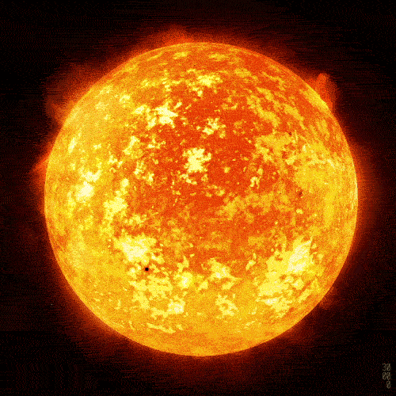

S P A C E
Via Láctea

Clique aqui.
A Via Láctea é uma galáxia espiral, da qual o Sistema Solar faz parte. Vista da Terra, aparece como uma faixa brilhante e difusa que circunda toda a esfera celeste, recortada por nuvens moleculares que lhe conferem um intrincado aspecto irregular e recortado. Sua visibilidade é severamente comprometida pela poluição luminosa. Com poucas exceções, todos os objetos visíveis a olho nu pertencem a essa galáxia.
NOMES DE GALAXIAS
- Andrômeda
- Galáxia Olho Negro
- Galáxia de Bode
- Galáxia Cartwheel
- Galáxia Charuto
- Cosmos Redshift 7
Sagittarius A

Clique aqui.
A* (Sgr A* - sigla), é uma fonte de rádio astronômica brilhante e muito compacta localizada no centro da Via Láctea, perto da fronteira das constelações de Sagitário e Escorpião. É parte de um objeto astronômico maior conhecido como Sagittarius A. Acredita-se que Sagitário A* seja a localização de um buraco negro supermassivo, como aqueles que geralmente estão nos centros da maioria das galáxias espirais e elípticas.
NOMES DE BURACOS NEGROS
- ALECAROLx-2344+514
- 3C 75
- 3C 371
- 4C +37.11 (acredita-se que esta galáxia de rádio tenha buracos negros supermassivos binários)
- AP Lib
- S5 0014+81 (é dito ser um quasar hiperluminoso compacto. Estimado em 40 bilhões de massas solares)
Sol

Clique aqui.
O Sol é a estrela do sistema solar. Todos os corpos celestes desse sistema, inclusive a Terra, giram em torno dele. O diâmetro do Sol é de 1,392 milhão de quilômetros. Ele é composto principalmente por hidrogênio e hélio, além de ferro, níquel, oxigênio, silício, carbono, nitrogênio, enxofre, etc.
SAMUEL TOLEDO ©